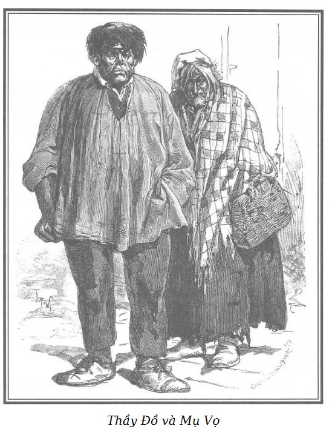

Sau khi dặn mụ chủ quán trông bình rượu và đĩa thức ăn, người đàn ông vừa đi ra trở lại ngay cùng với một người vai rộng, nét mặt cương nghị.
Người đó nói với người cùng đi:
– Tình cờ chúng ta gặp nhau thế này, Borel, vào đi, chúng ta làm cốc rượu.
Chọc Tiết nói nhỏ với Rodolphe, Sơn Ca và chỉ cho họ người mới vào.
– Lại sắp có chuyện… Cớm đấy! Hãy coi chừng!
Hai tên kẻ cướp trong đó có một tên đội mũ Hy Lạp kéo sụp xuống nháy mắt cho nhau, đứng dậy và đi ra cửa. Cùng lúc, hai cảnh sát mặc thường phục lao vào chúng và hô to một ám hiệu đặc biệt. Một cuộc vật lộn khủng khiếp xảy ra.
Cửa quán ăn bật mở, nhiều nhân viên khác ùa vào trong phòng và người ta thấy bên ngoài thấp thoáng những cây súng của hiến binh.
Nhân lúc lộn xộn, người bán than tiến vào ngưỡng cửa và tình cờ gặp ánh mắt Rodolphe, ông đưa ngón tay lên môi ra hiệu. Rodolphe với cử chỉ vừa nhanh vừa oai vệ lệnh cho người này đi ra rồi tiếp tục theo dõi mọi việc diễn ra trong quán.
Người đội mũ Hy Lạp điên cuồng rú lên, nằm vật ngửa trên mặt bàn, giãy giụa tuyệt vọng, ba người phải vất vả mới giữ được.
Hắn mệt lử, ủ ê, mặt tái mét, môi trắng bệch, hàm dưới trễ xuống co giật lập cập, tên đồng đảng của hắn không dám chống cự, tự đưa tay cho người ta cùm.
Mụ chủ quán đã quen với cảnh này nên ngồi bất động trong quầy, hai tay thủ trong tạp dề.
– Hai thằng ấy đã làm gì hả ông Borel? – Mụ hỏi một nhân viên mà mụ quen.
– Hôm qua chúng vừa giết một bà già ở phố Saint-Christophe để cướp của. Trước khi chết, bà già xấu số đã nói là bà cắn vào tay một trong hai tên sát nhân. Chúng tôi chú ý theo dõi hai thằng ác ôn này, người đồng đội của tôi vào khi nãy đã xác nhận đúng hình tích của chúng, thế là chúng bị tóm gọn.
– Thật may cho tôi, chúng đã trả tiền trước chai rượu chúng uống. Ông không dùng gì sao ông Borel? Xin mời ông cốc rượu.
– Cảm ơn bà Ponisse, tôi phải đưa chúng đi tống giam đã. Đấy, một tên còn chống cự!
Tên giết người đội mũ Hy Lạp còn giãy giụa điên cuồng khi người ta đẩy hắn lên một chiếc xe ngựa đợi sẵn bên đường, hắn kháng cự quyết liệt đến nỗi người ta phải xốc hắn lên. Tên đồng bọn của hắn run rẩy, khó khăn lắm hắn mới đứng vững được, môi tím lại mấp máy như muốn nói điều gì. Người ta cũng quẳng luôn khối thịt bất động đó vào xe.
– Bà Ponisse, – ông Borel nói – bà phải đề phòng Cánh Tay Đỏ mới được, hắn tinh quái lắm, hắn có thể gây tổn thất cho bà đấy.
– Cánh Tay Đỏ ấy à? Đã mấy tuần nay không thấy hắn lai vãng đến khu này, ông Borel ạ.
– Hắn luôn luôn ở quanh đây thôi, không ai thấy hắn ló mặt, bà biết chứ, chớ có nhận giữ gì cho hắn hoặc cho hắn gửi bất kỳ thứ gì, tội chứa chấp đấy!
– Ông yên tâm, tôi sợ Cánh Tay Đỏ như sợ quỷ. Chẳng ai biết hắn ở đâu, đi đâu và từ đâu đến, lần cuối cùng tôi thấy hắn, hắn bảo mới ở Đức về.
– Dù sao tôi cũng dặn phòng xa. Hãy cẩn thận!
Trước khi rời quán, viên cảnh sát quan sát kĩ những người khách khác và nói với Chọc Tiết bằng một giọng ban ơn, bề trên:
– Mày đấy à! Thằng ác ôn? Từ lâu không nghe nói đến mày? Mày không đánh lộn nữa sao? Đã tu tỉnh rồi à?
– Hiền như bụt ạ. Ông Borel, ông biết cho, cháu chỉ đập vỡ gáo những thằng muốn ngứa ngáy thôi ạ!
– Chỉ còn thiếu có thế, mày chẳng khỏe mà!
– Vậy mà tôi phải chịu đại ca đây của tôi, ông Borel ạ. – Chọc Tiết vừa nói vừa đặt tay lên vai Rodolphe.
Viên cảnh sát chú ý ngắm Rodolphe và nói:
– Ta không biết anh chàng này.
– Chúng ta sẽ không làm quen với nhau đâu ông bạn ạ. – Rodolphe nói.
– Tôi cũng mong được như vậy, – rồi viên cảnh sát quay lại mụ chủ quán – này bà Ponisse, quán của bà đúng là cái bẫy chuột, đã đến thằng giết người thứ ba tôi bắt được trong quán này.
– Và tôi cũng hy vọng rằng chẳng phải thằng cuối cùng, ông Borel ạ! Sẵn sàng hầu ông… – Mụ chủ quán duyên dáng và nghiêng mình chào.
Sau khi viên cảnh sát rời đi, gã thanh niên mặt xám ngoét luôn hút thuốc và uống rượu trắng nhồi lại tẩu và nói với Chọc Tiết:
– Anh không nhận ra tay đội mũ Hy Lạp à? Hắn là dân Boulotte, tên là Vélu. Khi tôi thấy cảnh sát đi vào, tôi biết ngay là có chuyện gì rồi, với lại từ lúc vào, Vélu luôn giấu tay dưới gầm bàn.
– Cũng may cho lão Thầy Đồ không đến đây. – Mụ chủ quán nói. – Thằng đội mũ Hy Lạp nhiều lần hỏi tôi về lão, về công việc chúng làm ăn với nhau nhưng tôi không bao giờ phản khách hàng của tôi. Người ta bắt chúng, được thôi, mỗi người một nghề nhưng tôi không bán chúng. Này, khi người ta nói đến chó sói là người ta thấy nó lòi ngay cái đuôi ra. – Mụ chủ quán nói thêm khi một người đàn ông và một người đàn bà bước vào quán; đấy là Thầy Đồ và vợ lão.
Mọi người trong quán đều rùng mình.

.Rodolphe cũng vậy, mặc dù vốn rất can đảm, ông cũng không chế ngự nổi sự khiếp đảm khi nhìn thấy tên cướp ghê gớm, ông ngắm lão vài phút, vừa tò mò vừa tởm lợm. Chọc Tiết nói đúng. Thầy Đồ đã tự hủy hoại thể xác để biến dạng một cách kinh khủng. Không thể thấy thứ gì đáng ghê sợ hơn bộ mặt của tên kẻ cướp này. Mặt lão đầy vết sẹo sâu hoắm ngang dọc, xám ngắt. Tác dụng ăn mòn của acid đã khiến môi lão sưng phồng lên, sụn ở mũi đã cắt, hai cái hố dị dạng thay cho hai lỗ mũi. Mắt màu xám rất sáng, rất nhỏ, rất tròn, ánh lên man rợ, trán dẹt như trán cọp khuất một nửa dưới chiếc mũ lưỡi trai có tua bằng lông thú dài màu vàng… Có thể nói đó là cái bờm của con quái vật. Thầy Đồ cao khoảng mét bảy, đầu to quá khổ, rụt sâu xuống hai vai rộng, nhô cao, bắp thịt nổi u, hằn rõ dưới nếp áo vải thô rộng thùng thình, hai tay dài, gân guốc, bàn tay ngắn mà to, đầy lông đến tận đầu ngón tay, chân vòng kiềng nhưng bắp chân to, báo hiệu một sức mạnh của đô vật. Con người ấy tóm lại, đúng là một loại đô vật.
Biểu hiện của tính tàn bạo toát ra từ bộ mặt khủng khiếp, từ cặp mắt nhìn lấm lét nhanh như chớp, dữ dội như mắt dã thú, khó tả. Mụ đàn bà đi cùng Thầy Đồ đã già, khá tươm, mụ mặc một chiếc váy nâu và áo kẻ ô vuông, đội mũ trùm đầu màu trắng.
Rodolphe quan sát từ phía bên, con mắt xanh và tròn, mũi khoằm, đôi môi mỏng dính, cái cằm dô, vẻ mặt vừa gian ác vừa xảo quyệt của mụ khiến ông nhớ lại hình dáng mụ Vọ của Sơn Ca. Sắp trao đổi nhận xét của mình với Sơn Ca, Rodolphe thấy cô bé tái mặt, lặng đi vì khiếp sợ người vợ gớm ghiếc của Thầy Đồ, sau đó run run nắm cánh tay Rodolphe, cô thì thầm:
– Mụ Vọ… Trời ơi, mụ Vọ… Mụ Vọ!
Lúc đó, Thầy Đồ thì thầm trao đổi khẽ với một trong những khách quen trong quán và thong thả đi lại bàn mà Rodolphe, Chọc Tiết và Sơn Ca đang ngồi. Lão nói với Sơn Ca bằng giọng khàn khàn, ồ ồ như tiếng gầm của cọp:
– Ê này, cô bé tóc hoe xinh đẹp, rời hai thằng ngợm này đi, để đến với tao.
Sơn Ca không trả lời, nép sát vào Rodolphe, răng đánh lập cập.
– Và chị… chị chẳng ghen đâu. – Mụ Vọ nói và cười phá lên. Mụ chưa nhận ra Sơn Ca chính là con Lỏi Con ngày xưa, nạn nhân của mụ.
– Ái chà, con nhãi, mày không nghe thấy tao nói à? – Gã quái ác vừa hỏi vừa tiến lại gần. – Nếu mày không đến, tao sẽ móc một mắt mày để mày xứng đôi với mụ Vọ. Và này, thằng để ria mép kia, – lão nói với Rodolphe – nếu mày không tống con bé tóc hoe này đến chỗ tao, tao sẽ bóp chết mày.
– Trời ơi! Trời ơi! Ông ơi! Ông che chở cho cháu với! – Sơn Ca chắp tay lại kêu cứu. Rồi nhận thấy mình sắp gây ra tai họa lớn cho Rodolphe, cô hạ thấp giọng. – Thôi, thôi đừng nhúc nhích, ông Rodolphe ạ, nếu lão đến gần, cháu sẽ kêu cứu, sợ cuộc cãi vã ồn ào sẽ khiến cảnh sát chạy đến, mụ chủ quán sẽ đứng về phía cháu.
– Bình tĩnh cháu ạ. – Rodolphe nói và nhìn thẳng Thầy Đồ một cách thách thức. – Cứ ở bên ta, cháu không đi đâu hết và nếu tên mất dạy quái ác kia dám đụng đến cháu, ta sẽ quẳng nó ra đường.
– Mày ấy à? – Thầy Đồ nói.
– Tao chứ ai! – Rodolphe đáp lại, mặc dù cô bé cố kéo lại, ông vẫn đứng dậy. Thầy Đồ lùi một bước trước sự phẫn nộ ghê gớm của Rodolphe.
Sơn Ca và Chọc Tiết kinh ngạc trước vẻ cuồng nộ dữ tợn làm cau có nét mặt thanh tao của Rodolphe, ông như khác hẳn, không nhận ra được nữa. Khi đánh nhau với Chọc Tiết, ông đã coi thường, ra vẻ trêu cợt, nhưng khi mặt đối mặt với tên Thầy Đồ, hình như Rodolphe mang sẵn lòng thù hận ghê gớm: đồng tử giãn to vì giận dữ, lóng lánh khác thường. Có những tia mắt như chứa ma lực khó cưỡng lại, nhiều tay kiếm sĩ quyết đấu nổi tiếng đã chiến thắng tuyệt đối nhờ ánh mắt mê hoặc và làm tê liệt đối phương.
Rodolphe vốn sẵn có ánh mắt đáng sợ ấy. Nó xoáy vào khiến người ta run sợ. Và những ai bị nó ám ảnh đều cảm thấy bối rối, bị chế ngự, họ thấy rõ ràng như vậy, và dù không muốn, vẫn cứ bị hút vào, không thể rời được nó.
Thầy Đồ rùng mình, lùi thêm một bước nữa, và không dám trông cậy ở sức mạnh ghê gớm của mình, lão vội tìm cán dao giấu trong áo khoác.
Một vụ chém giết đẫm máu có thể xảy ra nếu như mụ Vọ không túm lấy tay chồng, nói to:
– Hượm đã… Hượm đã… ông mãnh! Nghe tôi nói đã. Lát nữa, hãy làm thịt hai thằng nỡm này, chúng không thoát được đâu…
Thầy Đồ ngạc nhiên nhìn mụ Vọ. Trong suốt thời gian ấy, mụ Vọ theo dõi Sơn Ca với sự chú ý ngày càng tăng, cố lục lại trí nhớ. Cuối cùng, không còn hồ nghi gì nữa, mụ đã nhận ra con Lỏi Con ngày xưa của mụ.
– Có thể như vậy ư? – Mụ Vọ ngạc nhiên chắp tay lại lẩm bẩm. – Đúng con nhãi rồi, con ăn cắp kẹo. Nhưng mày ở xó nào ra? Có phải ma quỷ xui mày đến đây không? – Mụ nói thêm và giơ quả đấm về phía cô bé. – Mày lại vẫn luôn luôn rơi vào tay bà. Yên trí, nếu bà không nhổ răng mày nữa, bà sẽ làm mày khóc hết nước mắt. A! Chắc mày sẽ điên lên! Mày không biết sao? Bà biết cha mẹ mày. Lão Thầy Đồ đã gặp trong tù người đã giao mày cho bà khi mày bé tí tẹo. Người đó đã nói tên mẹ mày. Bố mẹ mày là bọn sụ!
Sơn Ca sửng sốt:
– Cha mẹ tôi! Bà biết họ ư?
– Đúng, chồng tao biết tên mẹ mày… nhưng tao thà rút lưỡi lão còn hơn để lão nói cho mày biết… Hôm qua, lão còn gặp người đã đưa mày đến nhà tao, bởi vì người ta không trả tiền nuôi mày cho vợ nó nên nó mới tống mày sang nhà tao. Vả lại, mẹ mày cũng chẳng thiết gì mày, mẹ mày sẽ thích lắm nếu biết là mày đã chết, chắc hẳn thế! Nhưng được, nếu bây giờ mày biết họ mẹ mày, chắc mày có thể tống tiền bà ta, đồ con hoang kia! Người mà tao nói có đủ giấy tờ, ông ta có những bức thư của mẹ mày… Mày khóc à, con nhãi. À, mà mày sẽ không biết mẹ mày đâu… mày sẽ không biết mẹ mày đâu.
– Tôi muốn tin là mẹ tôi đã chết, như thế còn hơn! – Sơn Ca vừa nói vừa lau nước mắt.
Rodolphe như quên đi Thầy Đồ, mê mải lắng nghe câu chuyện mụ Vọ kể. Trong khi đó, tên cường đạo thoát khỏi ánh mắt chế ngự của ông đã lấy lại can đảm; lão không tin con người trai trẻ với dáng tầm thước, mảnh khảnh lại dám đấu với lão.
Tin ở sức mạnh ghê gớm của mình, lão xông đến gần người che chở Sơn Ca và ra lệnh cho mụ Vọ:
– Thôi, vừa mồm chứ! Tao muốn đập vỡ mặt cái thằng tẩn này để cho con bé tóc hoe thấy tao còn khá hơn hắn.
Phóc một cái, Rodolphe nhảy qua bàn.
– Cẩn thận, kẻo vỡ hết bát đĩa của tôi. – Mụ chủ quán vẫn nhắc đi nhắc lại.
Thầy Đồ thủ thế, hai bàn tay đưa ra phía trước, thân người trên hơi ngả ra sau, đứng thật vững bằng cách xuống tấn trên đôi chân to đùng sừng sững như cột đá.
Khi Rodolphe nhào vào tên cường đạo, cửa quán ăn bật mở dữ dội. Người bán than xông vào trong phòng, xô mạnh Thầy Đồ, tiến đến gần Rodolphe và rỉ tai bằng tiếng Anh:
– Thưa ông, Tom và Sarah… họ đang ở đầu phố.
Nghe câu nói đó, Rodolphe cáu kỉnh, ném một đồng tiền vàng lên mặt quầy và chạy ra cửa.
Thầy Đồ toan cản đường nhưng Rodolphe đã quay lại tống vào giữa mặt lão hai quả đấm mạnh đến nỗi con bò mộng này lảo đảo, choáng váng và gần như ngã lộn nhào trên một cái bàn.
– Đúng là những ngón quyền mà tao đã xơi cuối hiệp lúc nãy! – Chọc Tiết hò to. – Vài lần như thế này nữa là tao học mót được…
Hồi tỉnh lại sau một vài giây, Thầy Đồ lao đuổi theo Rodolphe, nhưng ông và người bán than đã biến mất trong những ngõ hẻm ngoắt ngoéo tối tăm của thành phố; tên kẻ cướp chịu không theo kịp.
Lúc Thầy Đồ trở vào, tức sùi bọt mép, có hai người chạy ngược chiều với Rodolphe, hổn hển ùa vào quán như vừa phải cố sức chạy một thôi dài.
Cử chỉ đầu tiên của họ là đảo mắt nhìn khắp quán ăn.
– Tai hại cho tôi! – Một người nói. – Lại một lần nữa hắn tránh được bọn ta.
– Hãy kiên nhẫn… mỗi ngày có hai mươi tư giờ và cuộc đời còn dài. – Người kia trả lời. Cả hai người mới đến đều nói với nhau bằng tiếng Anh.